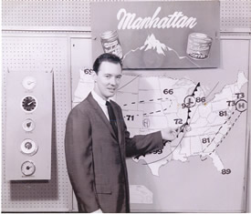

Fred Cline...."A Man Who Wore Many Hats at WSIL"
Most people will remember Fred Cline from the early days of WSIL. In the word of his colleague Bill Plater, Fred was "an excellent announcer and a good newsman".
Fred was an announcer from WEBQ radio (which was located a few blocks from the WSIL station) from 1952-1956. In 1956, he was hired by one of the owners of WSIL, O.L. Turner. Cline had also had a short stint at WGGH in Marion, Illinois.

During his years at WSIL, 1956-1965, Cline was a "jack of all trades" in his own words. At various times, he was weatherman, announcer, writer, producer, photographer,and account manager. He not only did play-by-play announcing of filmed basketball coverage, but also wrote commercials and serviced some of the advertising accounts. One of his more memorable jobs was as the writer, producer, and star of Shock Theater. As Count Roland, Cline appeared on Friday nights at 10:30 from 1958-59. He pre-recorded audio tape narratives using an echo chamber and eerie music in the background. During the breaks from that evenings horror flick, Cline would perform live skits such as demonstrating the latest "brain machine". Several heads of cauliflower were suspended from the studio catwalk with fishing line for effect. "You had to be there," commented Mr. Cline. Most people who tuned in during those early years remember Fred Cline as the weatherman who always gave the forecast at the beginning of the news.....a handy thing for many viewers who wanted to know the weather for the next day without hearing the news. Having the weather at the beginning of the newscast was something that made WSIL special.
Many viewers of WSIL in the late 50's will remember Fred Cline's interview with John F. Kennedy. As he describes it...his "15 minutes of fame". JFK came through Harrisburg in 1959 during his presidential campaign. The motorcade was scheduled to drive right by the Poplar Street studios. A camera was set up outside on the sidewalk, and Kennedy stopped in front of the studio for an interview with Fred.
After leaving WSIL in 1965, Fred and former "Cactus Pete" star Bill Plater formed WMCL radio in McLeansboro, Illinois. Both eventually left the business, and Fred later became a long-time engineer at WPSD-TV in Paducah, Kentucky. He retired form WPSD in 1998.
Continue to watch our website for photos of Fred's WSIL days, including the interview with JFK. Many thanks to Fred for his support and help with this website.